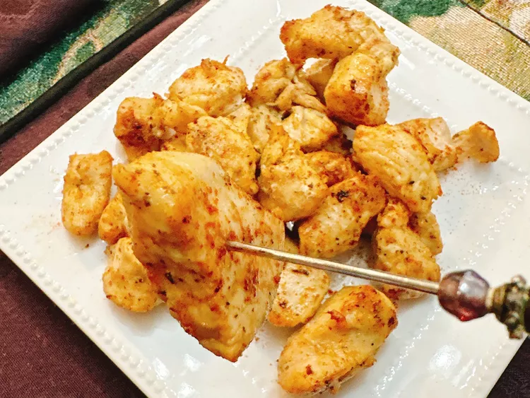

These air fryer chicken bites, seasoned with lemon, garlic, and Italian herbs, are
a perfect addition to an appetizer tray, great to add to a salad, or as a main dish for a family dinner.
Ingridients
- 1 pound skinless, boneless chicken breasts, cut into bite-sized pieces
- 3 tablespoons butter, melted
- 1 tablespoon olive oil
- 1 teaspoon lemon juice, or to taste
- 3 cloves garlic, minced
- 1 teaspoon Italian seasoning
- 1 teaspoon salt
- 1 teaspoon paprika
- 1/2 teaspoon cayenne pepper (optional)
Directions
-
Preheat an air fryer to 350 degrees F (175 degrees C) setting for 5 minutes.
-
Stir melted butter, olive oil, lemon juice, garlic, Italian seasoning, salt, paprika, and cayenne
together in a large bowl. Add chicken pieces, and toss to coat thoroughly. Place chicken pieces in
a single layer in the air fryer basket. You may have to cook them in batches.
-
Air fry in the preheated fryer until chicken is no longer pink at the center and juices run clear,
8 to 10 minutes. An instant-read thermometer inserted near the center should read 165 degrees F (74 degrees C).